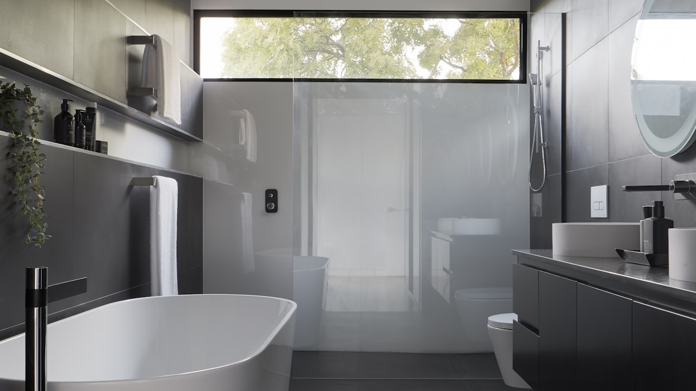
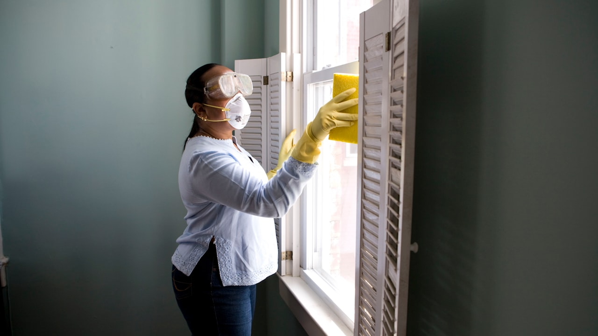

Les plans canicule existent, mais les indispositions ou retards des pouvoirs publics restent visibles : logements surchauffes, deserts medicaux, files aux urgences, arretes catastrophe naturelle tardifs. Pour un senior, compter uniquement sur l'Etat expose a des soins non optimaux et des factures elevees. Une mutuelle et une habitation bien calibrees comblent une partie du vide.


1. Logements mal prepares
Parc prive ancien, passoires thermiques, peu de centres fraicheur en zone rurale : l'offre publique ne rafraichit pas votre salon. Travaux d'isolation ou climatisation : pensez devis habitation pour couvrir le materiel et les sinistres lies aux installations.
2. Soins : lenteur et reste a charge

En canicule, les SAMU et urgences sont debordees. La teleconsultation aide, mais un coup de chaleur grave finit en hospitalisation. Les bas de gamme mutuelle laissent un reste a charge significatif (forfait journalier, depassements). Demander un devis mutuelle senior avant l'ete.
3. Cat Nat et sinistres : lenteur administrative

Secheresse et inondations post-orages dependent d'arretes interministeriels parfois publies des mois plus tard. En attendant, votre assurance habitation joue seule — d'ou l'interet de garanties degats des eaux bien plafonnees.
4. Ce que vous pouvez faire sans attendre l'Etat
Comparez mutuelle (hospitalisation, teleconsultation), habitation (cave, clim), prevoyance si fragilite. Un courtier ORIAS vous aide a faire les choses bien cote contrats pendant que les debats publics avancent lentement. Devis mutuelle · Devis habitation.
Quand le public ne suffit pas : exemples concrets
- Peu de centres fraicheur en zone rurale
- Urgences saturees les jours de pic
- Arretes Cat Nat secheresse publies avec retard
- Logements collectifs anciens mal ventiles
Mutuelle et habitation : agir sans attendre les reformes
Plutot que compter sur des evolutions lentes du parc immobilier ou des effectifs hospitaliers, un devis mutuelle senior et un devis habitation permettent de securiser votre foyer des cette saison. Un courtier compare les garanties a postes equivalents.
Pourquoi ce sujet compte pour votre lacunes plan canicule
Que vous soyez en recherche d'un devis lacunes plan canicule, en renouvellement ou en reaction a l'actualite, l'objectif reste le meme : comprendre vos garanties, comparer a postes equivalents et eviter les exclusions cachees. Les termes suivants reviennent souvent dans les contrats : lacunes plan canicule, indispositions gouvernement chaleur, desert medical senior, mutuelle senior canicule, reste a charge hospitalisation, Cat Nat lenteur, devis mutuelle, devis habitation, canicule France 2026, passoire thermique senior, urgences saturees.
Les garanties a verifier avant de signer
- Plafonds et franchises : ce qui reste a votre charge apres sinistre
- Exclusions : situations non couvertes (usure, negligence, zones a risque…)
- Delais : carence, declaration de sinistre, traitement du dossier
- Options : assistance, protection juridique, extension famille ou materiel
- Prix annuel : hors promotions — refaire un comparatif chaque annee
Comparer sans se fier au seul prix affiche
Un tarif bas peut masquer un plafond bas ou une franchise elevee. Demandez un tableau comparatif avec les memes postes : indispositions gouvernement chaleur, desert medical senior, mutuelle senior canicule. C'est la methode utilisee par les courtiers pour aligner Allianz, AXA, April, Generali, Zéphir, Solly Azar et le reste du marche.
Erreurs frequentes a eviter
- Souscrire en ligne sans lire les exclusions ni les plafonds
- Oublier de mettre a jour le contrat apres un demenagement, divorce ou changement d'activite
- Resilier avant d'avoir une attestation de remplacement (risque de rupture de garantie)
- Ne pas declarer un sinistre dans les delais contractuels
- Ignorer la clause de beneficiaire (prevoyance, assurance-vie, deces)
Lexique et mots-cles utiles (lacunes plan canicule)
- lacunes plan canicule : terme central de cet article — a retrouver dans votre contrat ou devis
- indispositions gouvernement chaleur : a comparer entre assureurs a garanties equivalentes
- desert medical senior : a comparer entre assureurs a garanties equivalentes
- mutuelle senior canicule : a comparer entre assureurs a garanties equivalentes
- reste a charge hospitalisation : a comparer entre assureurs a garanties equivalentes
- Cat Nat lenteur : a comparer entre assureurs a garanties equivalentes
- devis mutuelle : a comparer entre assureurs a garanties equivalentes
- devis habitation : a comparer entre assureurs a garanties equivalentes
- canicule France 2026 : a comparer entre assureurs a garanties equivalentes
- passoire thermique senior : a comparer entre assureurs a garanties equivalentes
- urgences saturees : a comparer entre assureurs a garanties equivalentes
Comment obtenir un accompagnement Leads Opportunities
Notre equipe de courtiers ORIAS vous aide a comparer, resilier ou souscrire avec un langage clair. Formulaire en ligne, demande de rappel ou parcours devis selon votre besoin : lacunes plan canicule, sans engagement.
Consultez aussi notre catalogue complet des assurances (sante, auto, habitation, emprunteur, prevoyance, VTC, animaux) et nos pages SEO par ville pour un devis localise.
Questions frequentes
Comment comparer une offre lacunes plan canicule en 2026 ?
Listez vos besoins reels (budget, garanties, situation familiale ou pro), puis demandez un comparatif a garanties equivalentes. Un courtier ORIAS explique les exclusions avant de signer.
Le devis est-il gratuit et sans engagement ?
Oui chez Leads Opportunities : devis gratuit, accompagnement humain, aucune obligation de souscription immediate.
Puis-je changer d'assureur en cours d'annee ?
Selon le contrat : loi Hamon, loi Chatel, loi Lemoine (emprunteur) ou echeance annuelle. Verifiez delais de preavis et equivalence de garanties.
Quels documents preparer pour un devis ?
Contrat actuel, dernier avis d'echeance, sinistres des 3 a 5 ans, situation (locataire, emprunteur, salarie, independant).
Courtier ou comparateur en ligne : quelle difference ?
Le comparateur affiche un prix ; le courtier verifie les plafonds, franchises, delais de carence et la compatibilite avec votre profil.
Cet article Canicule remplace-t-il un conseil personnalise ?
Non : il informe sur les garanties et mots-cles utiles. Une etude personnalisee reste necessaire avant de resilier ou souscrire.